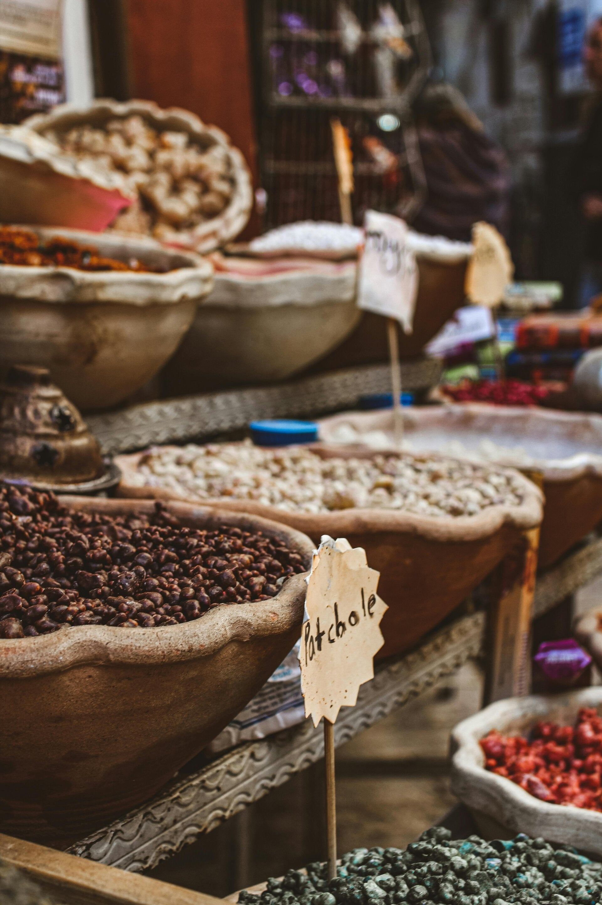

← Belangrijke winkels

Markten op Kos
Markten op Kos: wat kun je verwachten
Wie als toerist naar Kos reist, denkt vaak aan sfeervolle Griekse markten vol kruiden, olijven, kazen, versgebakken brood en kleurrijke kraampjes. In veel vakantielanden hoort struinen over een lokale markt echt bij de ervaring. Op Kos ligt dat nét iets anders.

Markthal
Hoewel het eiland verschillende markten kent, moet je niet verwachten dat je hier grote traditionele Mediterrane markten vindt zoals in bijvoorbeeld Spanje, Turkije of op sommige andere Griekse eilanden. De bekendste markt van het eiland is de zogenaamde “Markthal” in het centrum van Kos-Stad. Ondanks de naam is dit vooral een toeristische winkelhal waar je souvenirs, sponsen, kruiden, honing en wat fruit kunt kopen. Leuk om even doorheen te lopen, maar het heeft niet de authentieke sfeer van een echte lokale versmarkt.
Groente winkels
Dat betekent overigens niet dat Kos geen charme heeft. Integendeel. Het eiland draait juist meer om gezellige tavernes, kleine familiezaakjes en ontspannen dorpspleinen dan om grote marktculturen. Voor verse lokale producten kun je vaak beter terecht bij kleine winkels langs de weg of bij traditionele supermarktjes in de dorpen.